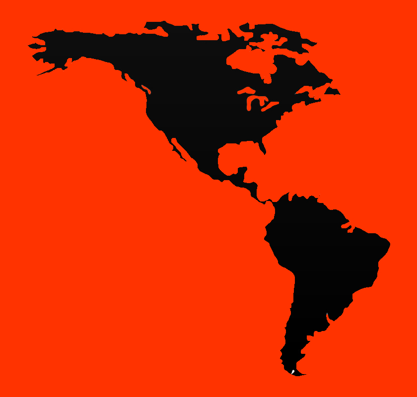

Expandido en america
Este juego fue siendo más y más conocido en América Latina gracias a la YMCA. Era muy fácil de jugar, no importaba el clima exterior y así los jugadores se podían mantener en forma todo el año.
A Brasil lo llevó João Lotufo y lo adaptó a las necesidades de la educación física. Inicialmente no había uniformes. En 1956, Habib Maphuz y Luiz de Oliveira, con la YMCA de Sao Paulo en Brasil modificaron las reglas y permitieron que compitieran los adultos mayores.
Luiz de Oliveira escribió las Reglas del Futsal, que fueron adoptadas a nivel internacional. Para 1965 se creó la Confederación Sudamericana de Fútbol de Salón, formada por Uruguay, Paraguay, Perú, Argentina y Brasil.
Poco después organizaron un torneo que atrajo mucho interés. Se dice que el periodista José Antônio Inglêz fue uno de los principales contribuyentes al crecimiento de este deporte, él fue quién acuñó el término “futsal”.
Luego en 1971 se formó la Federación Internacional de fútbol de Salón (Fifusa), conformada por Argentina, Bolivia, Brasil, Paraguay, Perú, Portugal y Uruguay, después creció a 32 países.
Comenzaron los campeonatos mundiales, el primero fue en Sao Paulo, Brasil, en 1982, resultado campeón el equipo local. Luego, la federación comenzó a trabajar para que el deporte se diera a conocer en Europa y así la segunda Copa del Mundo de Futsal fue en Madrid en 1985.
Debido a la popularidad de este de deporte, la FIFA comenzó a preocuparse por el futsal. Pero hubo una disputa entre esta organización y Fifusa que duró varios años, entonces esta última registró la palabra fut-sal en 1985.
